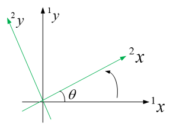
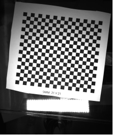
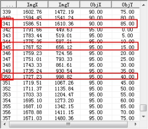

“二维坐标空间关系计算工具”是在已知两个坐标系之间的旋转角度，利用4个点计算两个坐标空间之间的关系，每个坐标系对应两个点。其中旋转角度，是坐标空间1旋转到坐标空间2的角度，方向由x轴指向Y轴为正。
| 分类 | 参数名称 | 参数描述 |
|---|---|---|
| 属性窗口 | 坐标系旋转角度 | 坐标空间1旋转到坐标空间2的角度，方向由x轴指向y轴为正方向。单位：度。 |
| 图像窗口 | 无 | 无 |
| 数据链 | 坐标空间1点集 | 坐标空间1中两个点的坐标。 |
| 坐标空间2点集 | 坐标空间2中两个点的坐标。 | |
| 高级界面 | 无 | 无 |
| 分类 | 参数名称 | 参数描述 |
|---|---|---|
| 监视窗口 | Matrix | 坐标空间1到坐标空间2的转换矩阵。 |
| 执行结果 | 工具执行结果。 | |
| 执行时间 | 工具执行时间。 | |
| 图像窗口 | 执行结果 | 显示工具执行结果，执行成功显示“OK”，执行失败显示“NG”，同监视窗口的执行结果参数。 |
| 数据链 | 坐标空间转换关系 | 坐标空间1到坐标空间2的转换矩阵，sc3Matrix类型。同监视窗口参数。 |
坐标系旋转角度指的是从坐标空间1旋转到坐标空间2的角度，即坐标空间1旋转θ角度之后，坐标空间1的X轴和坐标空间2的Y轴平行且同向。

“坐标空间1点集”、“坐标空间2点集”的输入可以由“二元数组生成工具”获得，“二元数组生成工具”的“数据类型”属性要选成sc2Vector。每个坐标点可以通过 “二维向量生成工具”来获得，之后作为“二元数组生成工具”的输入数据，组合成二元数组。
二维坐标空间关系计算工具通常和“二维坐标空间转换工具”配合使用。“二维坐标空间转换工具”可以使用“二维坐标空间关系计算工具”的输出。
参见“\Samples\二维坐标空间转换.gvp”。
工程说明:
该工程是用靶标坐标系和图像坐标之间的转换关系做测试，如图2所示。靶标坐标系作为坐标空间1，图像坐标系作为坐标空间2；坐标空间1，即靶标坐标系到坐标空间2即图像坐标系的旋转角度为-6.6813度，因为两个坐标系的都是X向右，Y向下。这两个坐标系中点坐标可以通过，VisionWare的例程CalibrateDemo6.exe获得，如图3所示。坐标空间1点集用的是341角点的靶标坐标和345角点的靶标坐标，坐标空间2点集用的是341角点的图像坐标和345角点的图像坐标。350角点的靶标坐标和图像坐标用来作验证。

